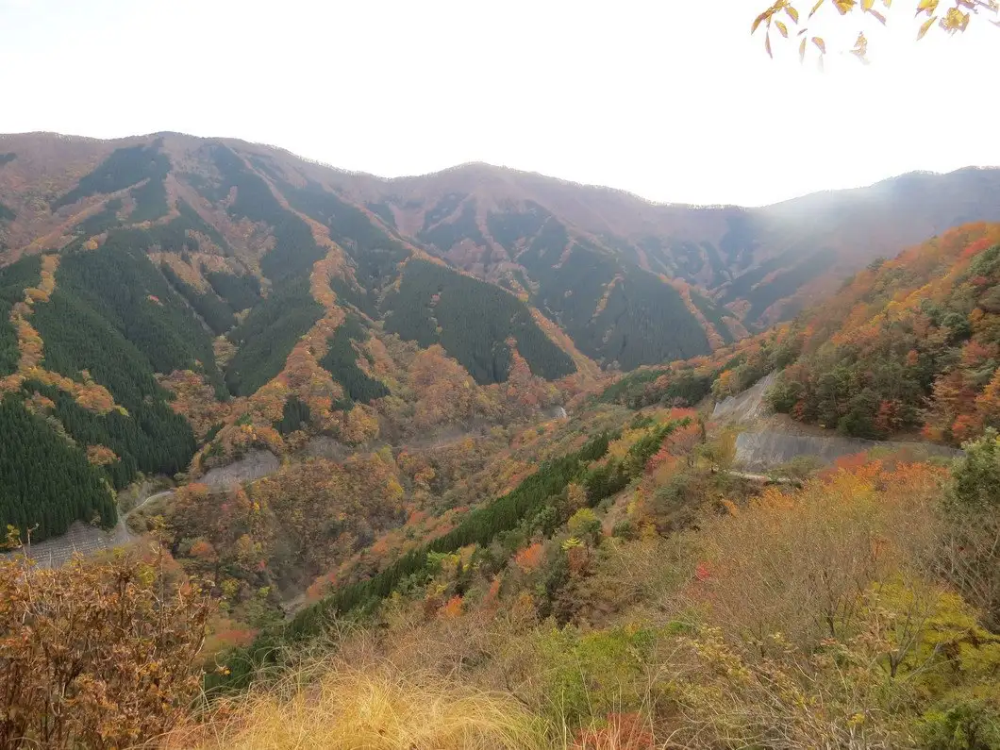
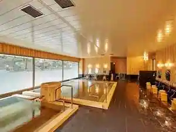
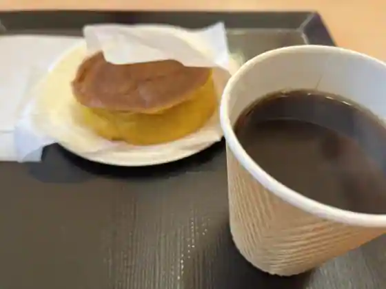
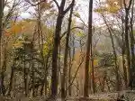

Japan / Nara / Kamikitayama
Kamikitayama · Nara
Kamikitayama
Highlighted on the Nara map.

Kamikitayama Village Hall



Sights · Things to do · Places to eat · Places to stay · Day-to-day services
Nearby in Nara: ← Ikoma · Kanmaki →
Other towns: Ando · Asuka · Gojo · Gose · Heguri · Higashiyoshino · Ikaruga · Ikoma · Kanmaki · Kashiba · Kashihara · Katsuragishi · Kawai · Kawakami · Kawanishicho · Koryo · Kurotaki · Mitsue · Miyake · Nara · Nosegawa · Oji · Oyodo · Sakurai · Sango · Shimoichi · Shimokitayama · Soni · Takatori · Tawaramoto · Tenkawa · Tenri · Totsukawa · Uda · Yamatokoriyama · Yamatotakada · Yamazoe · Yoshino
All towns in Nara · Back to all prefectures